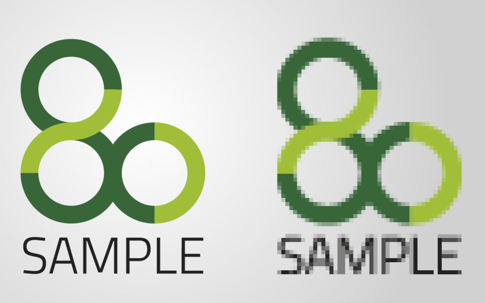
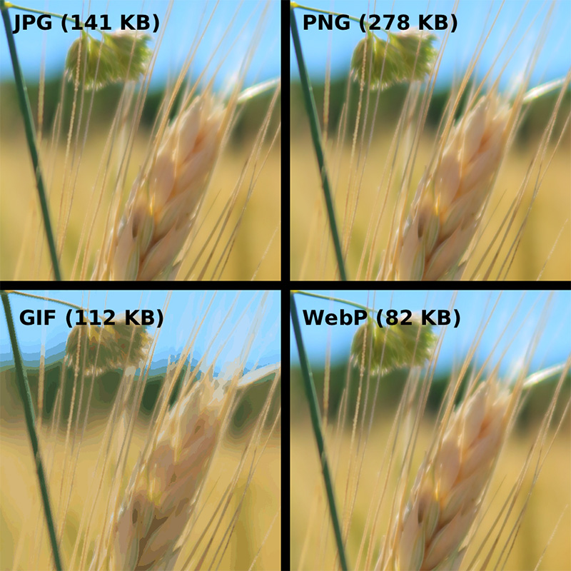
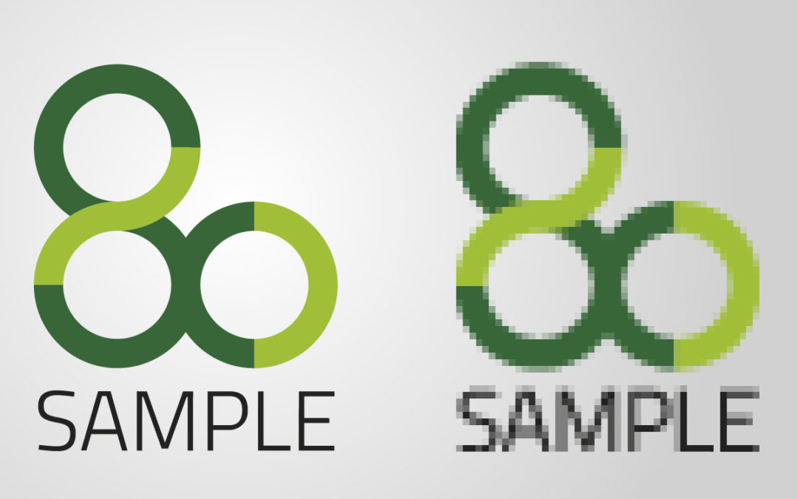
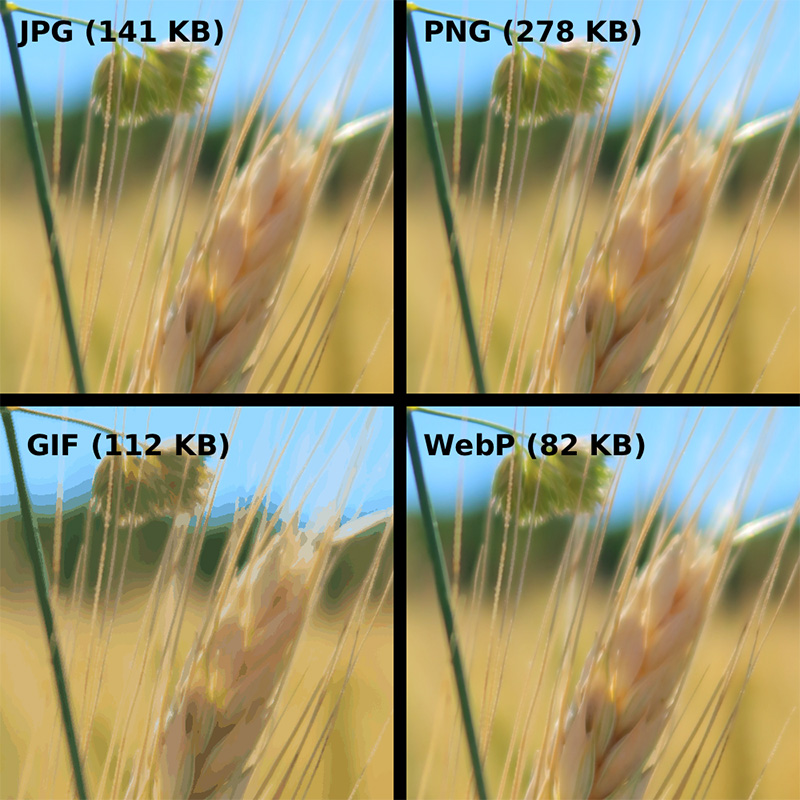

„JPG“ oder besser „JPEG“ für „Joint Photografic Experts Group“ und bezeichnet ein sogenanntes verlustbehaftetes Dateiformat, dass bis zu 16,7 Millionen Farben darstellen kann. Ein Vorteil beim JPG-Format ist die Möglichkeit der Kompression.
Das GIF-Format („Graphics Interchange Format“) unterstützt im Gegensatz zum JPG-Format lediglich 256 Farben (8 Bit) und eignet sich somit vor allem für die Darstellung von Bildern mit wenigen Farben (z. B. Logos, Banner)
PNG steht für „Portable Network Graphics“. Das PNG-Format ist dabei im Prinzip ein Hybrid aus JPG- und GIF-Format Dabei unterscheidet man zwischen PNG-8 (8 Bit Farbtiefe) und PNG-24 (24 Bit Farbtiefe), wobei beim PNG-8 ähnlich wie beim GIF-Format nur 256 Farben möglich sind, während bei PNG-24 über 16 Millionen Farben unterstützt werden
Das PNG-Format eignet sich also demnach vor allem für kleinere Bilder, Grafiken oder Formen wie z. B. Buttons und ist dann immer erste Wahl, wenn ein transparenter Hintergrund notwendig ist
SVG-Format („Scalable Vector Graphics“) Grafiken in Form von Vektoren dargestellt, was eine verlustfreie Skalierung bei geringer Dateigröße ermöglicht
 


